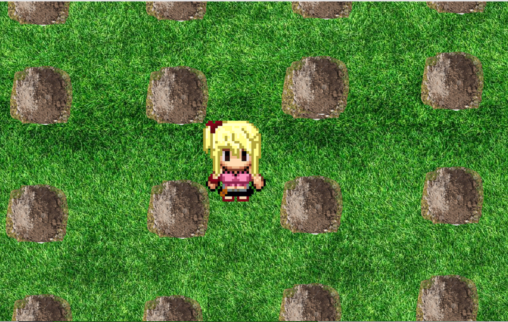

Portfólio
Aqui estão alguns dos meus projetos que foram desenvolvidos durante a disciplina de Experiência Criativa: Navegando na Computação.

Jogo inspirado no famoso game campo minado, só que com personagem controlável cuja qual se chama Lucy.
26/04
Jogo onde o surfista tem que sobreviver por cerca de um minuto enquanto desvia das ondas, possui três vidas.
08/05